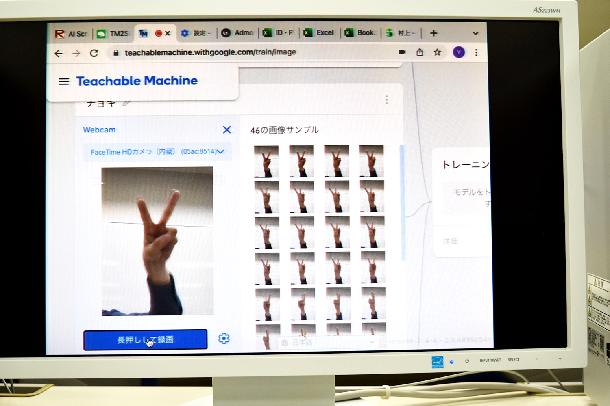

Laboratory Life
協調メディア研究室（高田秀志教授）と合同で小中学生を対象としたプログラミングワークショップを実施しました。

概要
情報理工学部では、小中学生や高校生を対象としたプログラミング授業の実施、初等中等教育と大学における専門系情報教育の連携などを目的として、2021年1月に「小中高対象プログラミング教育プロジェクトチーム(Project-TKC, Teach-Kids-Coding)を発足している。その一環として、本研究室はScratchを用いたAIプログラミングワークショップを実施した。小学生16名（小学校1年生が3名、2年生が4名、3年生が3名、4年生が2名、5年生が1名、6年生が3名）が参加し、Googleの提供するTeachable Machineの画像認識サービスを用いて、ジャンケンの手を自動判別するジャンケンプログラムの作成に取り組んだ。児童によっては、新たなジャンケンの手を考えてTeachable Machineに学習させるなど意欲的な姿も見られ、好評であった。

